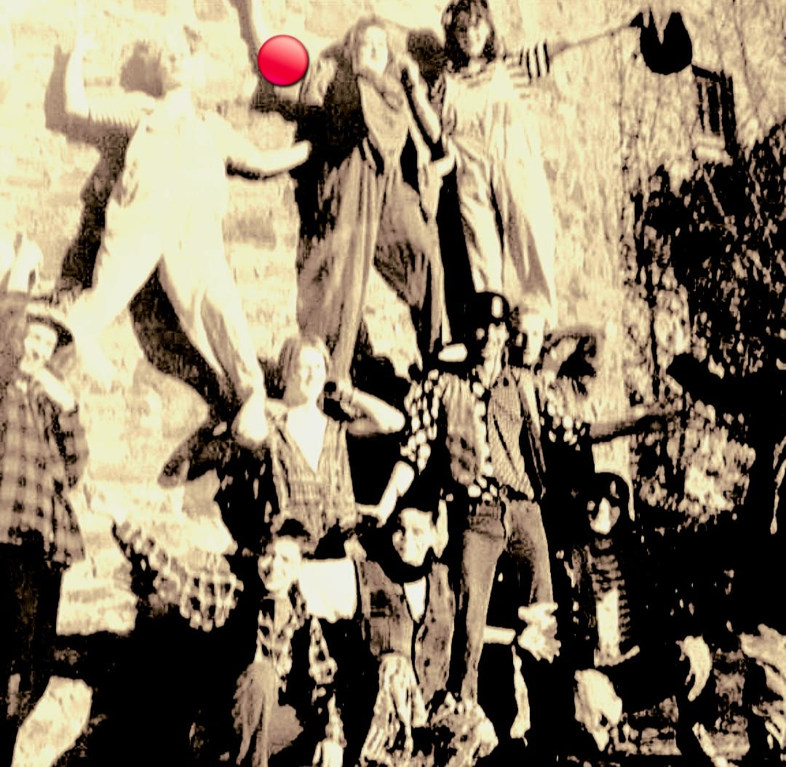

Ich bin Sabine Eberling – Therapeutin, Theaterpädagogin und leidenschaftliche Improvisationskünstlerin.
Ausbildung & künstlerischer Weg
Mein Fundament ist eine fundierte therapeutische und pädagogische Ausbildung sowie eine kontinuierliche künstlerische Weiterentwicklung:
- Sport- und Gymnastiklehrerin sowie Physiotherapeutin
- Studium: B.A. Management sozialer Innovationen
- Ausbildung zur Theaterpädagogin
- Clownsausbildung an der Antihelden-Akademie, Augsburg (2023–2025)
Theaterarbeit & Projekte
Seit vielen Jahren schlägt mein Herz für die Bühne, die Clownerie und das gemeinsame Spiel. Meine wichtigsten Meilensteine im Überblick:
Erste Auftritte als Clown
Zirkus Schnecke – Sozialpädagogisches Diplomprojekt von Rodger Ody, Euskirchen.

Inklusives Theaterprojekt „Krüppeltheater“ (Neckargemünd)
Mitarbeit und Begleitung des Projekts unter der Leitung von Christian Verhoeven, u.a. Teilnahme an Theaterfestivals in Grenoble und Friedrichshafen.
Gründung der Theatergruppe „Litfasssäule“
Ensemble-Mitglied in Amateurtheatergruppen & Workshops (Heidelberg)
Aktive Teilnahme in verschiedenen Ensembles sowie kontinuierliche Weiterbildung durch Theaterworkshops (u. a. bei den Heidelberger Theatertagen und dem Theaterverein Baden-Württemberg). Prägende Impulse erhielt ich hierbei durch die Zusammenarbeit mit Wolfgang Mettenberger, Christian Verhoeven und Susi Wimmer.
Mitgründung des „Augenblicktheaters“ in Mannheim
Ein inklusives Herzensprojekt mit Jugendlichen mit und ohne Behinderung.
Naturtheater Waldkindergarten Kallamatsch
Regelmäßige Durchführung von Outdoorkindertheaterkursen.
Ensemblemitglied bei „Dramen und Herren“ (München)
Festes Mitglied des Theaterensembles in München.
Gründung der Improgruppe „Die heißen Apfeltaschen“
Bühne, Clown & lebendige Begegnung
Erste Erfahrungen im Jugendzirkus führten zu professionellen Clownperformances bei Kinder- und Kulturprojekten (wie „Zirkus aus dem Koffer“) sowie Auftritten im sozialen Bereich.
Als Mitglied bei Clowns ohne Grenzen sind Auslandseinsätze geplant, um Menschen mit Humor zu verbinden.
Clownsausbildung an der Antihelden-Akademie (Augsburg)
Fundierte, mehrjährige Ausbildung im Bereich Clownerie und darstellende Kunst.
Gründung der Improgruppe „ImproGetöse“
Langjährige Erfahrung als Kursleiterin (u.a. beim Studentenwerk München) fließt hier in eigene, lebendige Theaterabende ein.
Meine Arbeit heute
In meiner Arbeit verbinde ich therapeutische Erfahrung mit kreativen Methoden. Ich begleite Menschen dabei, sich selbst neu zu erleben – über Bewegung, Spiel und Ausdruck. Was dabei entsteht, sind Momente von Lebendigkeit, Mut und echtem Kontakt.
Was mir wichtig ist
- Ich glaube an die Kraft von Humor.
- An die Wirkung von Präsenz.
- Und daran, dass jeder Mensch Ausdruck und Resonanz verdient.
Perfekt geeignet für:
- Feste und Feiern
- Geburtstage
- Sommerfeste
- Bunte Abende
- Firmenshows
- Kulturpolitische Events